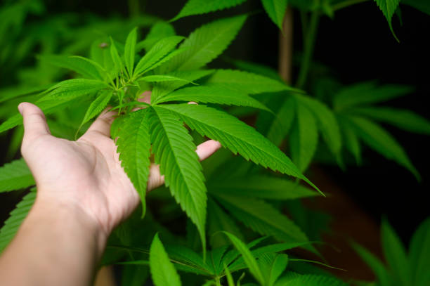
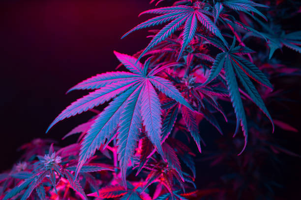

News
Cannabis News Site Indoor Cultivation
Cannabis News Site Outdoor Growing
Cannabis News Site Hydroponic Systems
About Us
Cannabis Site News 101

What is hydroponic cannabis cultivation?
Jun 02, 2024
Hydroponic cannabis cultivation is a method of growing marijuana plants without the use of soil.. Instead, plants are grown in a nutrient-rich water solution that provides all the essential nutrients needed for healthy growth.
What is the difference between indoor and outdoor cannabis growing?
Jun 02, 2024
Indoor and outdoor cannabis growing are two distinct methods of cultivating marijuana plants, each with its own set of advantages and disadvantages.. The main difference between the two lies in the environment in which the plants are grown, as well as the level of control that growers have over various factors that can affect plant health and yield.
Indoor cannabis growing involves setting up a controlled environment within a grow room or tent, where growers can manipulate variables such as temperature, humidity, light intensity, and airflow to create optimal conditions for plant growth.
What is the importance of pH levels in cannabis cultivation?
Jun 02, 2024
pH levels play a crucial role in cannabis cultivation as they directly affect the plant's ability to absorb nutrients and ultimately thrive.. In simple terms, pH is a measure of how acidic or alkaline a substance is on a scale of 0 to 14, with 7 being neutral.
Cannabis plants prefer slightly acidic soil with a pH level between 6 and 7.
What is the role of nutrients in successful cannabis cultivation?
Jun 02, 2024
Nutrients play a crucial role in successful cannabis cultivation, as they provide essential elements that are necessary for the plant's growth and development.. Just like any other living organism, cannabis plants require a balanced diet to thrive and reach their full potential.
One of the primary functions of nutrients in cannabis cultivation is to support photosynthesis - the process by which plants convert light energy into chemical energy.
What is the best lighting for optimal cannabis growth?
Jun 02, 2024
When it comes to growing cannabis, proper lighting is key to achieving optimal growth and high-quality yields.. There are a variety of lighting options available, but not all are created equal when it comes to meeting the specific needs of cannabis plants.
The best lighting for optimal cannabis growth is typically provided by high-intensity discharge (HID) lights, specifically metal halide (MH) and high-pressure sodium (HPS) bulbs.
How to Maximize Your Cannabis Yield with Advanced Cultivation Techniques
Jun 02, 2024
Cannabis cultivation has come a long way in recent years, with advancements in technology and techniques that can help growers maximize their yields.. By implementing advanced cultivation techniques, growers can increase the quantity and quality of their cannabis harvests.
One key factor in maximizing your cannabis yield is controlling the environment in which your plants are grown.
Discover the Secrets of Growing High-Quality Cannabis at Home
Jun 02, 2024
Growing high-quality cannabis at home has become an increasingly popular pastime for many individuals.. With the legalization of marijuana in various states and countries, more people are looking to cultivate their own plants in order to have a reliable source of high-quality product.
Mastering the Art of Indoor Cannabis Cultivation: Tips and Tricks Revealed
Jun 02, 2024
Cannabis cultivation has been a popular pastime for many individuals looking to grow their own supply of high-quality marijuana.. With the rise of indoor growing techniques, more and more people are taking up the challenge of mastering the art of indoor cannabis cultivation.
Indoor cannabis cultivation offers a number of advantages over outdoor growing, including greater control over environmental factors such as temperature, humidity, and lighting.
Boost Your Harvest: Learn Expert Cannabis Growing Techniques Today
Jun 02, 2024
Are you looking to increase your cannabis harvest and take your growing skills to the next level?. If so, then it's time to boost your harvest by learning expert cannabis growing techniques today.
Growing cannabis can be a rewarding experience, but it can also be challenging, especially if you're new to the process.
Unleash Your Green Thumb: The Ultimate Guide to Successful Cannabis Cultivation
Jun 02, 2024
Cultivating cannabis can be a rewarding and fulfilling experience for both novice and experienced growers.. With the right tools, knowledge, and dedication, anyone can unleash their green thumb and successfully cultivate this versatile plant.
The key to successful cannabis cultivation lies in understanding the plant's needs and providing it with the proper care throughout its growth cycle.
Indoor vs outdoor cultivation methods
Jun 02, 2024
When it comes to cultivating plants, there are two main methods: indoor and outdoor cultivation.. Each method has its own set of advantages and disadvantages, and the choice between the two depends on various factors such as climate, space, cost, and personal preference.
Indoor cultivation involves growing plants inside a controlled environment, typically a greenhouse or a grow room.
Hydroponic growing techniques
Jun 02, 2024
Hydroponic growing techniques have revolutionized the way we cultivate plants, offering a sustainable and efficient method of producing high-quality crops.. This innovative approach involves growing plants in a nutrient-rich water solution without the use of soil.
One of the key advantages of hydroponic growing is its ability to provide plants with optimal conditions for growth.
Soil preparation and nutrient management
Jun 02, 2024
Soil is the foundation of all life on Earth, providing essential nutrients and support for plants to grow and flourish.. Proper soil preparation and nutrient management are crucial steps in ensuring the health and productivity of our agricultural systems.
Soil preparation involves a series of practices that aim to create an optimal growing environment for crops.

Pest and disease control in cannabis cultivation
Jun 02, 2024
Pest and disease control in cannabis cultivation is a crucial aspect of growing healthy and high-quality plants.. Just like any other crop, cannabis is susceptible to various pests and diseases that can significantly impact its growth and overall yield.
Pruning and training techniques for maximizing yields
Jun 02, 2024
Pruning and training techniques are essential practices in the world of agriculture for maximizing yields.. These methods involve strategically shaping and guiding plants to encourage healthy growth and increase productivity.